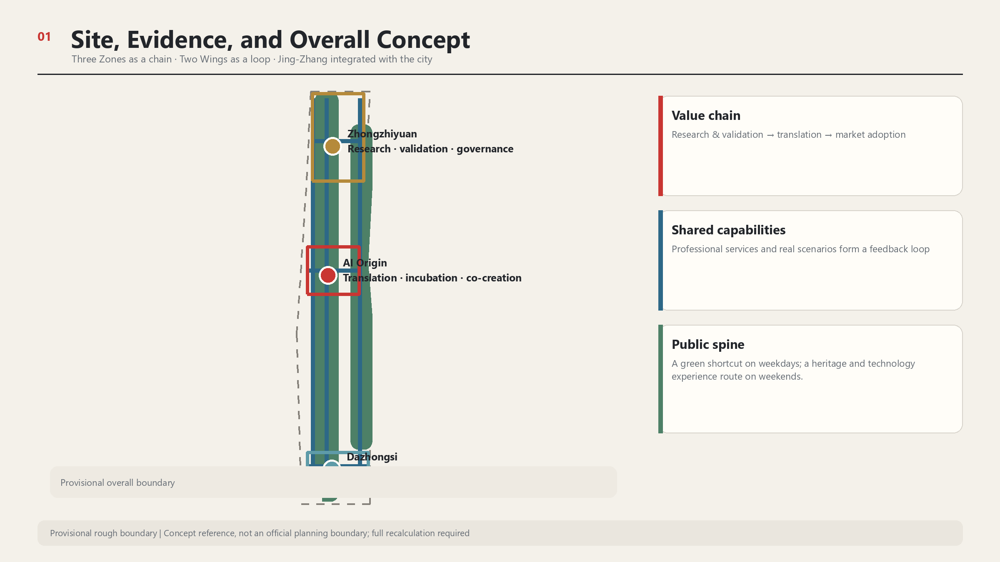
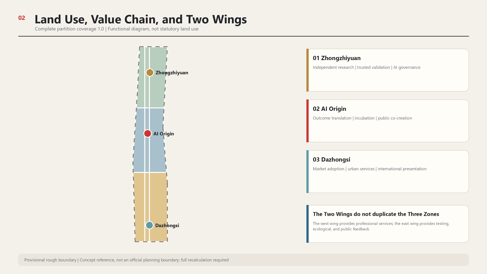
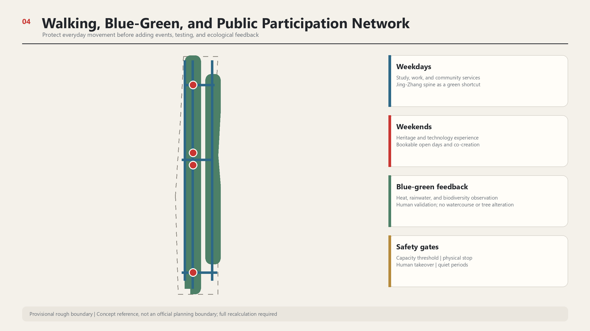
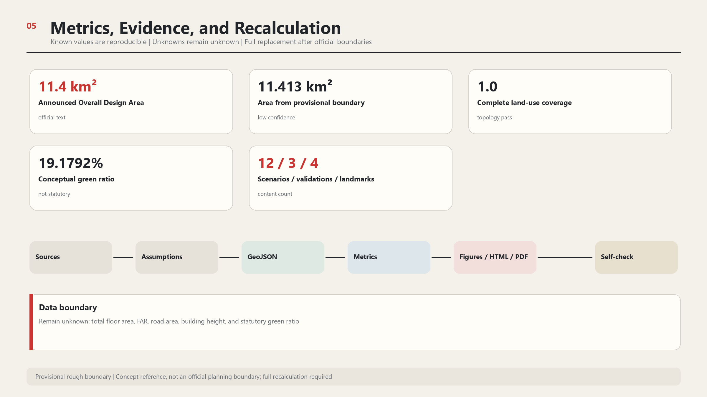

Provisional rough geometry supports conceptual design and low-confidence recalculation only; it is not an official planning boundary.
Overall Structure

Land Use and Full-Chain Innovation

Three Zones and Four Landmarks

Walking and Blue-Green Network

Metrics and Evidence

Task Coverage
Overview map | Three-level scope | Key areas | Land-use partition | Walking and cycling | Blue-green public space | Buildings | Renewal projects | AI scenarios | Core metrics | Self-check status | Sources | Assumptions
Personas, Scenarios, and Operations
Eight personas cover students and researchers, start-ups, enterprise adopters, residents, older people and carers, disabled people, visitors, and international talent. Twelve scenarios include city questions, multilingual services, accessible navigation, learning, health-resource navigation, heritage guides, international open days, enterprise compliance, trusted models, robots, smart commerce, and blue-green citizen science.
Public participation
Conserve the station interior and place reversible questions outside; support commuting and study on weekdays and a heritage-technology route on weekends.
Industry validation
Trusted models, robots, and smart commerce use separate protocols, human takeover, and exit conditions.
Long-term operations
One secretariat, three district stations, two specialist wings, one public committee, four seasonal programmes, and an annual failure review.
Buildings, Renewal, and Public Services
The four building features are pending-survey functional carriers and create no demolition, new-build, or investment conclusion. Ten actions begin with baseline survey, heritage review, walking audits, and governance protocols. Public services retain human, telephone, paper, and accessible alternatives.
Sources, Assumptions, and Self-Check
Twenty-three sources and eight key assumptions form the evidence register. Provisional boundaries, key-area positional mismatch, planning controls, ownership, heritage, transport, municipal, and blue-green data are explicit conditions for further work.